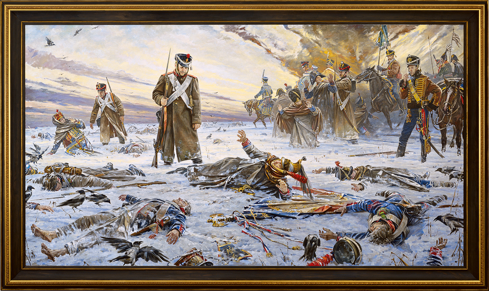

«Гибель нашествия»
“The Doom of the Invasion”
Описание картины
Осенью 2012 года Василий Нестеренко закончил работу над монументальным полотном «Гибель нашествия», посвященном 200-летию победы в Отечественной войне 1812 года. Презентация работы художника символично состоялась в музее Храма Христа Спасителя, возведенном в честь победы над Наполеоном.
На картине изображена сцена, которая повторялась изо дня в день в течение нескольких месяцев в конце 1812 года. Русский солдат, смотрящий на французского кирасира, олицетворяющего поверженную Европу, словно задается вопросом: «Зачем ты пришел?» Военная форма, оружие и снаряжение переданы с поразительной точностью и вниманием к историческим деталям.
История создания картины
Во время подготовительных работ перед написанием картины Василий Нестеренко провел фотосессию с участниками военно-исторической реконструкции на берегу речки Пружонки рядом с селом Душоново, изучая освещение и фактуру формы на зимнем морозе.
Где выставлялась картина
- Храм Христа Спасителя, Москва, 2012
- Центральный музей Великой Отечественной войны на Поклонной горе, Москва, 2013
- Центральный выставочный зал «Манеж», Москва, 2017 и 2023
- Музей Востока, Майкоп, 2017
About the Artwork
In the autumn of 2012, Vasily Nesterenko completed his monumental canvas “The Doom of the Invasion,” dedicated to the bicentenary of victory in the Patriotic War of 1812. Symbolically, the presentation took place in the museum of the Cathedral of Christ the Saviour.
The canvas captures the tragic retreat of the invading forces across the snow-covered Russian plains. Every piece of equipment, from the regimental standard bearing the French eagle to the uniforms of the cuirassiers, is reproduced with rigorous historical accuracy.
Creation History
Vasily Nesterenko conducted plein-air studies with military-historical reenactors in January 2012 along the frozen banks of the Pruzhonka River to examine light conditions, winter landscapes, and realistic textures.
Exhibition History
- Cathedral of Christ the Saviour, Moscow, 2012
- Central Museum of the Great Patriotic War on Poklonnaya Hill, Moscow, 2013
- Central Exhibition Hall “Manege”, Moscow, 2017 & 2023
- State Museum of Oriental Art (Branch), Maykop, 2017